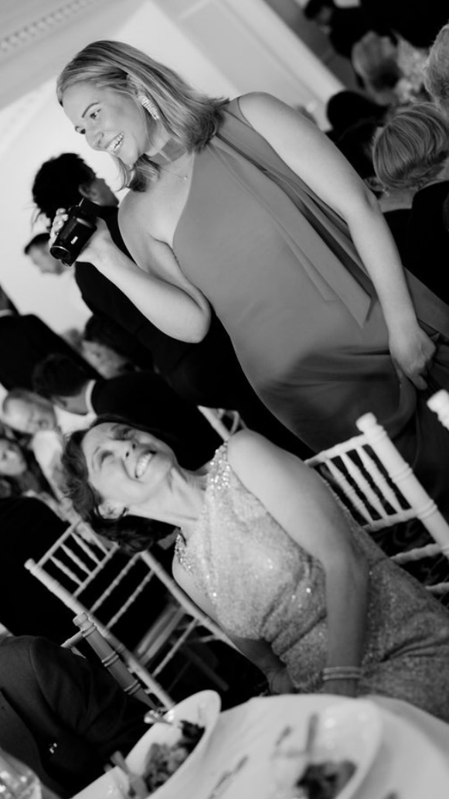

Introducing Shauna Ricketts

Shauna Ricketts comes from a documentary filmmaking background. She loves classic publications like the New Yorker but is open to new wave niche reporting publications such as that of The Motley Fool, Morning Brew, and HeatMap. Shauna is interested in the meat of what makes stories human and how we can interestingly captivate an audience through journalism.
Here are some articles that Shauna has recently enjoyed reading:
- "What Is It About Robert Redford?" by Richard Raynor: This is a vintage article that is circulating after the recent news of Robert Redford's passing. I have been a major fan of him for years, he started the Sundance Film Festival in the 1970s and has been an advocate of indie films and filmmakers ever since. I got to hear him speak once in Park City and I will never forget it.
- "New York Is a Big City. Its Graft Has Become Small-Town Stuff." by Michael Wilson: I have been fascinated by the casino proposals across New York City. I am reporting on Coney Island which is one of the proposed sites for a new casino and there has been a lot of investigation and discussion surrounding the small bribes that are influencing casino proposal support. This article speaks to a culture of bribery and how it is changing.
- "Trump Loses Big to Overturn $83.3M E. Jean Carroll Defamation Judgment" by Erica Orden: This piece does a wonderful job of catching the audience up on all that has gone down with the E. Jean Carroll suit against Trump. I have been following this story for years. I was a stills photographer at the initial hearing for E. Jean's case in the Empire State Building. I find the avoidance that Trump and his lawyer's have gotten away with throughout this case problematic. This article speaks to the room for justice that the outcome of this case has potential for.